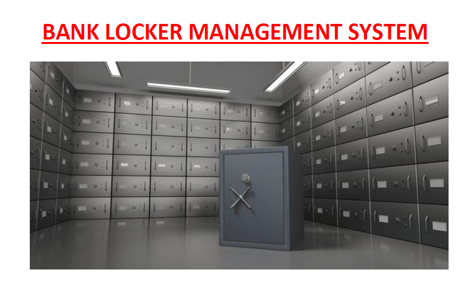
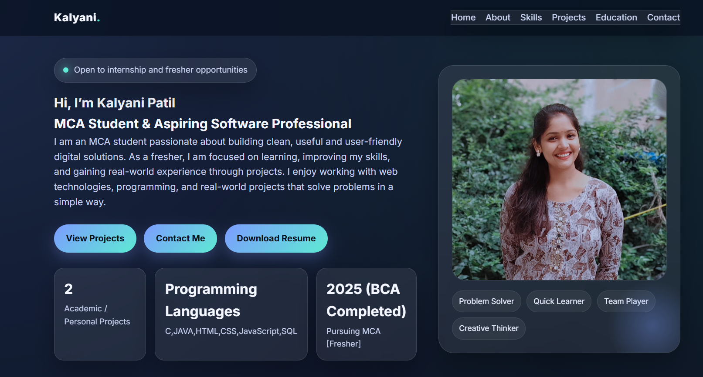

Bank Locker Management System
A project developed to manage locker details, customer records, and operations in an organized way. It improved data handling and reduced manual work.
I am an MCA student passionate about building clean, useful and user-friendly digital solutions. As a fresher, I am focused on learning, improving my skills, and gaining real-world experience through projects. I enjoy working with web technologies, programming, and real-world projects that solve problems in a simple way.
Academic / Personal Projects
C,JAVA,HTML,CSS,SQL
Pursuing MCA [Fresher]
I am a motivated MCA student with a strong interest in software development and technology. I like learning new tools, improving my coding skills, and creating practical projects. My goal is to start my career in a role where I can learn, grow, and contribute with dedication.
Creating responsive, modern and user-friendly web pages using HTML, CSS and JavaScript.
Strong basics in programming logic, problem solving and writing structured code for academic and mini projects.
Understanding of data handling, queries and development tools used in real-world workflows.
The projects which i build during my study .

A project developed to manage locker details, customer records, and operations in an organized way. It improved data handling and reduced manual work.

A personal portfolio website to showcase profile, projects, skills and contact details in a professional way.
Currently pursuing MCA with a focus on advanced programming, software development, and real-world application building. Actively improving technical skills and working on practical projects.
Completed BCA with 9.55 CGPA. Built strong fundamentals in programming, databases, software engineering, and project development.
Scored 85.83%. Developed academic discipline.
Scored 94.60%. Built a strong foundation and consistent study habits.
kalyanipatil0804@email.com
+919699564448
Maharashtra, India